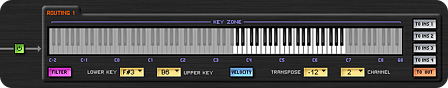

La patchbay MIDI
Per consentire il pieno controllo di strumenti ed effetti software, ma anche di apparecchi MIDI esterni, AudioStation è equipaggiata con numerosi ingressi e uscite MIDI ed una potente patchbay MIDI, con avanzate capacità di elaborazione dei dati in tempo reale.
Ogni canale della console di missaggio può essere configurato per ricevere ed inviare dati MIDI attraverso uno o più ingressi e/o uscite. Così ogni musicista (e non solo i tastieristi!) può controllare via MIDI, in totale autonomia, i dispositivi e/o gli strumenti attivati nel proprio canale/i.
Ad esempio, un chitarrista, utilizzando una pedaliera MIDI standard potrà facilmente richiamare i propri setup o regolare i parametri di effetti software quali wah wah, chorus, delay o altri.
AudioStation dispone di due livelli di elaborazione dei dati MIDI: Global MIDI Routing regola le impostazioni generali degli I/O MIDI della console; Channel MIDI Routing consente invece interventi specifici sui dati MIDI indirizzati agli strumenti e agli effetti di ogni singolo canale del mixer.
Global MIDI Routing
In Global MIDI Routing vengono stabiliti i collegamenti degli ingressi e delle uscite MIDI ai canali della console di missaggio.
Per suonare un sintetizzatore software attivato in un canale del mixer, il primo passo da fare è infatti dotare il canale di un ingresso MIDI al quale collegare una master keyboard.
Assegnare un ingresso MIDI ai canali della console è utile anche per cambiare i setup con una pedaliera, o per regolare in tempo reale i parametri automatizzabili di strumenti ed effetti software, come ad esempio il volume di un simulatore di amplificatori per chitarra, il movimento di un wah-wah, la velocità del tremolo, la profondità del flanger, o altro.
Allo stesso modo, se si desidera anche controllare apparecchi MIDI esterni (sintetizzatori, expander sonori, unità di effetti, groove e drum machine, ecc.), è necessario assegnare al canale del mixer una o più uscite MIDI.
L’assegnazione degli ingressi e delle uscite MIDI ai canali della console è totalmente libera e davvero semplice da eseguire: è sufficiente selezionale il canale desiderato e cliccare sugli ingressi e le uscite MIDI da assegnare.

MIDI I/O assegnabili
In aggiunta agli ingressi e alle uscite MIDI hardware, sono presenti 4 ingressi e 4 uscite assegnabili, ai quali possono essere associati liberamente controller MIDI di tipo USB o Ethernet, connessi ad AudioStation.
In questo modo strumenti ed effetti VST possono essere controllati anche con master keyboard USB, controller per DJ, pedaliere ed ogni altro tipo di controller sprovvisto di connessioni MIDI. E se necessario è addirittura possibile utilizzare interfacce MIDI aggiuntive.
MIDI Thru e MIDI Merge
In alcuni casi potrebbe essere necessario controllare gli strumenti attivati in un canale del mixer da due o più ingressi MIDI o, viceversa, controllare da un ingresso MIDI gli strumenti attivati su due o più canali della console, o addirittura controllare da un ingresso MIDI dispositivi esterni collegati a più uscite MIDI.
Per consentire la massima flessibilità, come detto, l’assegnazione degli ingressi e delle uscite MIDI ai vari canali del mixer può essere definita in base alle esigenze di ognuno. Speciali funzioni di MIDI Thru e MIDI Merge permettono di indirizzare liberamente i dati da ogni ingresso MIDI a più canali della console, da più ingressi MIDI ad un singolo canale, da un più canali ad una singola uscita MIDI o da un canale a più uscite MIDI.
Ad esempio, collegando un ingresso MIDI a più canali del mixer è possibile dare vita a vere e proprie “Super Patch” con più strumenti software che suonano simultaneamente (fino a 3 per canale, fino a 40 totali).
Un setup per ogni situazione
Le impostazioni MIDI globali vengono salvate e richiamate con le performance (le scene della console). Ogni performance può così avvalersi di collegamenti MIDI differenti, consentendo di realizzare un setup specifico per ogni situazione.
In questo modo è anche possibile caricare e mantenere in memoria un intero gruppo di strumenti (fino a 40) e, semplicemente variando i collegamenti MIDI globali, scegliere di volta in volta quale/i strumento/i utilizzare.
Hanging Note
In una patchbay MIDI tradizionale, per evitare che si verifichi il problema delle cosiddette ”note sospese” (che può manifestarsi cambiando setup con impostazioni MIDI differenti mente alcune note sono ancora premute) prima di attivare un nuovo setup vengono spente automaticamente ed indistintamente tutte le note attive.
Global MIDI Routing dispone invece di un’innovativa funzione, basata su un avanzato sistema di analisi dei dati, che previene l’insorgere del problema, spegnedo solo le note che necessitano di essere realmente disattivate, lasciando che le altre continuino a suonare.
Channel MIDI Routing
In Channel MIDI Routing è possibile elaborare i dati MIDI in ingresso e in uscita di ogni canale della console di missaggio, per creare specifiche mappature, split e layer di tastiera, regolare la risposta dinamica e la trasposizione, richiamare suoni e volumi, e tenere così sotto controllo sia strumenti ed effetti software attivati nei canali della console di missaggio, sia strumenti ed effetti MIDI esterni, da utilizzare assieme agli strumenti ed agli effetti software o da soli.
Ogni canale del mixer, quindi ogni musicista, dispone di un sistema di Channel MIDI Routing proprio ed indipendente, le cui impostazioni vengono salvate e richiamate con le patch del canale.
In questo modo ogni canale della console ed ogni patch, olte a caricare strumenti e suoni propri, può avvalersi di mappature, punti di split, layer, valori di transpose e curve di dinamica specifiche per ogni strumento e perfino per ogni suono.
Queste caratteristiche, unite a quelle di Global MIDI Routing, consentono dunque di realizzare setup dedicati per ogni situazione, e per ogni musicista.
Mai prima d’ora era stato creato un sistema di routing ed elaborazione dei dati MIDI così avanzato, versatile, potente e, al tempo stesso, musicale, intuitivo e facile da utilizzare da chiunque, anche senza conoscenze tecniche approfondite.
{kind=link}
Cinque routing MIDI
Per consentire la massima flessibilità, i dati MIDI in arrivo all’ingresso/i assegnato/i al canale del mixer, possono essere indirizzati a 5 routing indipendenti, elaborati con potenti processori MIDI e poi indirizzati liberamente ai plug-in e/o ad apparecchi MIDI esterni.
Ogni routing è equipaggiato con 5 differenti processori MIDI: Filter, Lower Key e Upper Key, Velocity, Transpose e Channel (vedi descrizioni riportate sotto). Da ognuno dei routing i dati MIDI possono essere indirizzati a fino a 5 diverse destinazioni: To Ins 1, 2, 3, 4 e To Out. Le destinazioni To Ins 1-4 indirizzano i dati MIDI agli strumenti software attivati negli Insert VST del canale; con To Out i dati vengono invece indirizzati a strumenti hardware collegati all’uscita/e MIDI assegnata/e al canale della console.
Questa particolare architettura consente di creare e gestire facilmente molteplici situazioni. Ad esempio:
- Pilotare 2 strumenti in layer (sovrapposti): attraverso il Routing 1 i dati MIDI in ingresso vengono semplicemente veicolati ad entrambi gli Insert VST dove sono attivati i 2 strumenti (nell’esempio l'Insert VST 1 e l'Insert VST 2).
- Pilotare 2 strumenti in layer (sovrapposti) ma con uno dei due che suona all’ottava superiore: in questo caso è sufficiente attivare i Routing 1 e 2, indirizzarli agli strumenti distintamente ed applicare allo strumento desiderato (nell’esempio quello caricato nell’ Insert VST 2) un valore di transpose di +12 semitoni.
{kind=link}
{kind=link}
- Pilotare 2 strumenti con 2 diverse zone di tastiera (split): anche in questo caso è sufficiente attivare i Routing 1 e 2 ed indirizzarli distintamente ai 2 strumenti, quindi regolare per ognuno i limiti di tastiera inferiore e superiore.
- Pilotare uno strumento MIDI esterno: è sufficiente utilizzare uno dei routing, regolare i processori MIDI a piacimento per impostare l’eventuale zona di tastiera, velocity, transpose e canale MIDI, e scegliere come destinazione “To Out”, ovvero l’uscita/e MIDI assegnata/e al canale della console.
- 
{kind=link}
{kind=link}
Attivando tutti i routing disponibili, in ogni canale della console è possibile definire fino a 5 diverse zone di tastiera e/o utilizzare fino a 5 suoni sovrapposti. Inoltre, come spiegato nelle pagine VST Player e Digital Mixer, è possibile utilizzare più canali del mixer assieme per dare vita a vere e proprie “Super Patch”, con fino a 40 strumenti e fino a 76 plug-in di strumenti ed effetti assieme.
Filter
E' un potente filtro MIDI che può essere regolato per impedire il passaggio di qualsiasi tipo di dati MIDI.
Questo importante processore può essere impiegato per raggiungere molteplici scopi. Ad esempio, riprendendo il setup con due strumenti citato sopra, se si desidera che la ruota del pitch bend influenzi solo uno dei due strumenti, è sufficiente filtrare i dati di pitch bend nel routing relativo all’altro strumento. La stessa cosa può essere fatta con il pedale di sustain, la modulation wheel, l’aftertouch, o altro.
In realtà, il filtro risulta estremamente utile in moltissime altre circostanze, anche molto articolate, come ad esempio pilotare con 2 master keyboard 2 strumenti caricati nello stesso canale della console. In questo caso, dopo aver regolato le master keybard su canali MIDI differenti, è sufficiente filtrare per ognuno degli strumenti i dati della master keyboard con la quale si desidera pilotare l’altro strumento.
Questa regolazione è utile anche quando si utilizza AudioStation come expander sonoro multitimbrico per lo studio, pilotando gli strumenti con le tracce MIDI di un sequncer.
Lower Key e Upper Key
In ogni routing è possibile stabilire i limiti inferiore e superiore della tastiera entro i quali deve rispondere uno più strumenti. E' anche possibile rigettare la zona di tastiera interna ai limiti ed utilizzarla per il controllo di altri strumenti. Per facilitare la selezione delle zone è possibile trascinare comodamente il mouse sulla tastiera virtuale o attivare la funzione Learn e premere semplicemente il tasti desiderati.
Velocity
L’utilizzo della dinamica appropriata è fondamentale per ottenere la migliore resa sonora con ogni strumento, inclusi gli strumenti software.
Ad esempio, per controllare adeguatamente un suono di pianoforte acustico è assolutamente necessario utilizzare una master keyboard con un’appropriata regolazione della risposta dinamica dei tasti.
L’utilizzo di una master keyboard con dinamica regolabile è ugualmente necessario per poter impostare un valore di velocità fisso da utilizzare, ad esempio, con alcuni sintetizzatore o con suoni di organo elettromeccanico.
Purtroppo, la maggior parte delle master keyboard in vendita oggi non dispone di dinamica regolabile e, in molte situazioni, non consente un adeguato controllo del suono.
AudioStation è per tanto equipaggiata con un potente sistema di regolazione della velocity, utilizzabile con ogni master keyboard ed adattabile ad ogni strumento e perfino ad ogni suono, con il quale, oltre a sopperire alla mancanza di regolazioni nelle master keyboard, consente di ampliare le normali capacità di controllo.
Per ottenere la risposta dinamica appropriata in ogni situazione e la massima versatilità, ogni routing dispone di un proprio processore di velocity con numerose regolazioni.
E’ possibile scegliere tra 12 differenti curve con risposta lineare, non lineare, lineare inversa, logaritmica, esponenziale e fissa. Chiaramente, è’ possibile modificare le curve per adattarle alle proprie esigenze, o disegnarne di nuove.
Oltre alle curve di dinamica, che determinano il rapporto tra la velocity ricevuta dalla tastiera e quella inviata allo strumento, sono presenti alcuni utili elementi di controllo aggiuntivi:
Offset
Stabilisce un valore minimo di velocity da trasmettere allo strumento, anche se il valore in arrivo dalla tastiera è inferiore.
Upper Limit
Stabilisce il valore di velocity massimo da trasmettere allo strumento anche se il valore in arrivo dalla tastiera è superiore.
Lower Hold-Off
Stabilisce un valore minimo di velocity che le note devono avere per essere trasmesse allo strumento.
Upper Hold-Off
Stabilisce il valore di velocity massimo che le note devono avere per essere trasmesse allo strumento.
Regolando opportunamente i parametri di cui sopra è possibile ottenere alcuni effetti dinamici creativi, quali Velocity Switch (premendo i tasti leggermente suona uno strumento, premendoli con forza ne suona un altro) e Velocity Crossfade (passaggio graduale da uno strumento ad un altro in base alla forza esercitata sulla tastiera).
Transpose
Transpose consente di trasporre le note che transitano attraverso il routing. E' possibile modificare il valore di +/- 4 ottave, con intervalli di un semitono. Anche transpose può essere utilizzato in modo creativo: attivare i Routing 1 e 2 e indirizzarli allo stesso strumento, quindi regolare il transpose del Routing 2 su +7 semitoni. In questo modo, per ogni tasto premuto suoneranno due note ad un intervallo di quinta.
Canale MIDI
Channel regola il canale MIDI dei dati da inviare agli strumenti. L’utilizzo principale è con strumenti multitimbrici, ovvero quelli che mettono a disposizione più suoni contemporaneamente, ognuno su un proprio canale MIDI. Infatti, grazie a questa funzione, è possibile controllare 2 suoni differenti anche con master keyboard che non sono in grado di trasmettere contemporaneamente su 2 diversi canali MIDI. E’ sufficiente attivare 2 routing, regolarli su canali MIDI differenti ed indirizzarli entrambi allo stumento politimbrico. Chiramente, potranno anche essere programmate zone di tastiera e/o punti di split.
Send Data
{kind=link}
In questa sezione è inoltre possibile inserire, ricevere ed inviare dati MIDI esclusivi di sistema (SysEx), ad esempio per immagazzinare e ripristinare al momento opportuno i banchi sonori di sintetizzatori MIDI esterni o per regolarne parametri specifici.